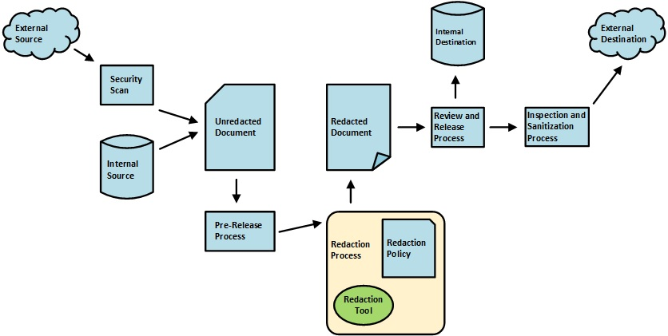

The scope of this Protection Profile Module (PP-Module) is to describe the security functionality of redaction tools
in terms of [CC] and to define functional and assurance requirements for such
products. This PP-Module is intended for use with the following Base-PPs:
Protection Profile for Application Software, Version 1.4 (App PP or PP_APP_V1.4)
This Base-PP is valid for this technology type because a redaction tool is a specific type of software application and can therefore be reasonably expected to implement
security functionality that is typical of application software. Redaction is the process of selectively removing and replacing
information from a document or other logical container of data for release to an audience not
intended to view that information. Redacted information is not limited to classified material;
other examples include privacy data, proprietary information, trade secrets, and legal strategy.
Instances of redaction include replacing classified text with a black box to release a document to
an unclassified environment, replacing privacy-related data such as telephone numbers with all
Xs to release a database to a contractor, converting a proprietary format document to Portable
Document Format (PDF) to release a what-you-see-is-what-you-get (WYSIWYG) document.
The risk from improper or incomplete redaction is the inadvertent disclosure of classified or
sensitive data.
Redaction is not sanitization. In the sanitization process, information is removed with no
indication that the sanitization process took place. In the redaction process, selected visible
information is removed and replaced with something innocuous (e.g. black box or text) so that
the reader knows redaction took place. This replacement is a critical part of the process not
shared with sanitization.
Redaction is not sanitization. In the sanitization process, information is
removed with no indication that the sanitization process took place. In the redaction process,
selected visible information is removed and replaced with something innocuous (e.g. black box
or text) so that the reader knows redaction took place. This replacement is a critical part of
the process not shared with sanitization.
 Figure 1:
One possible workflow of an electronic document through the redaction process.
Figure 1 shows the typical workflow of a document from source to destination
and through the redaction process. Other workflows are possible. Software vendors have the flexibility to devise their own
workflow solutions for their target consumer. However, in any workflow, this PP-Module
applies only to the part of the workflow that is performed by the redaction tool and
only to the redaction functionality in that tool. Other functionality in the redaction tool,
other tools used in the workflow, the organization's redaction policy as well as security
requirements and security policies that apply to other parts of the workflow are beyond the
scope of this PP-Module.
1.2 Terms
The following sections list Common Criteria and technology terms used in this document.
1.2.1 Common Criteria Terms
Assurance
Grounds for confidence that a TOE meets the SFRs [CC].
Base Protection Profile (Base-PP)
Protection Profile used as a basis to build a PP-Configuration.
Collaborative Protection Profile (cPP)
A Protection Profile developed by
international technical communities and approved by multiple schemes.
Common Criteria (CC)
Common Criteria for Information Technology Security Evaluation (International Standard ISO/IEC 15408).
Common Criteria Testing Laboratory
Within the context of the Common Criteria Evaluation and Validation Scheme (CCEVS), an IT security evaluation facility
accredited by the National Voluntary Laboratory Accreditation Program (NVLAP) and approved by the NIAP Validation Body to conduct Common Criteria-based evaluations.
Common Evaluation Methodology (CEM)
Common Evaluation Methodology for Information Technology Security Evaluation.
Distributed TOE
A TOE composed of multiple components operating as a logical whole.
Extended Package (EP)
A deprecated document form for collecting SFRs that implement a particular protocol, technology,
or functionality. See Functional Packages.
Functional Package (FP)
A document that collects SFRs for a particular protocol, technology,
or functionality.
Operational Environment (OE)
Hardware and software that are outside the TOE boundary that support the TOE functionality and security policy.
Protection Profile (PP)
An implementation-independent set of security requirements for a category of products.
A comprehensive set of security requirements for a product type that consists of at least one Base-PP and at least one PP-Module.
Protection Profile Module (PP-Module)
An implementation-independent statement of security needs for a TOE type complementary to one or more Base-PPs.
Security Assurance Requirement (SAR)
A requirement to assure the security of the TOE.
Security Functional Requirement (SFR)
A requirement for security enforcement by the TOE.
Security Target (ST)
A set of implementation-dependent security requirements for a specific product.
Target of Evaluation (TOE)
The product under evaluation.
TOE Security Functionality (TSF)
The security functionality of the product under evaluation.
TOE Summary Specification (TSS)
A description of how a TOE satisfies the SFRs in an ST.
1.2.2 Technical Terms
Attachments
An electronic document or data file that is part of the main file but is
logically distinct and separable from the main electronic document.
Complex Objects
Objects that may have their own static or functional metadata and may
differ between the stored and visible form, such as images, attachments, Microsoft OLE
objects, Microsoft ActiveX controls, and temporal objects.
Functional data
Forms, scripts, link Uniform Resource Locators (URLs), workflow data,
action buttons, formulas in a spreadsheet, macros or any type of executable
content.
Images
The actual image data stored in the file as opposed to what is visible; the
visible image can be cropped or resized but the full image could still be retained in
the file format and may or may not match the visible image; some image formats can
have their own metadata, such as Joint Photographic Experts Group (JPG) and Tagged
Image File Format (TIFF).
Metadata of objects or embedded objects
Data associated with an object to describe or identify the contents of the object such as exchangeable image file format (EXIF) data of images; images themselves can contain other images and
their own metadata.
Obscured visible data
Content that could be visible but is obscured in some way such as content
that runs off an edge of the container, text in a black font on black background (or
any color of font on a similar color background), very small fonts, cropped or clipped
graphics or images, hidden layers, portions of an embedded object (e.g. Microsoft Object Linking and Embedding (OLE))
that are outside the view container.
Remnant data
Artifacts of the original application or source file format such as remnant
or unreferenced data from fast saves, unreferenced or unused elements, malformed
elements that cannot be fixed, garbage data in the file structure.
Static data or metadata
File properties such as author or creation date, stored form field data,
undo cache or any data kept to revert to a prior version of an element or the document
itself, incremental updates, collaboration data such as comments, tracked changes,
workflow data, embedded search indexes, bookmarks, document info added by 3rd-party
apps, accessibility data such as alternate text, etc.
Structural data
Data that is part of the file format structure, such as a file header or fonts, and is necessary to interpret the file properly for display or print.
Temporal Objects
A particular type of complex object whose representation extends through a
time interval, such as video, audio, flash animation, slide shows, etc. References to
“complex objects” in the requirements section of this paper include temporal
objects.
Visible contents
The visual representation of text, images,
and complex objects in a file.
1.3 Compliant Targets of Evaluation
The Target of Evaluation (TOE) described by this PP-Module is limited to the redaction of electronic documents defined in standards such as the
series International Organization for Standards (ISO)/International Electrotechnical Commission
(IEC)-29500 (Office Open eXtensible Markup Language (XML), including but not limited to Microsoft Word,
PowerPoint, and Excel documents), ISO/IEC-32000 (PDF), or the definitive standard for a
format. Mail guards, filters, and batch redaction tools are beyond the scope of this PP-Module.
Requirements that apply to features such as administrative control over particular redaction
settings, multi-person review prior to release, etc., are outside the scope of this PP-Module. The TOE
may have those features but is not required to have them and their use and enforcement is
governed by the organization’s redaction policy.
This PP-Module covers the software functionality of the redaction process; it does not include
requirements for how users should decide what to redact or other policy issues. Analysis of
documents for covert data transfer is part of the decision-making process for what to redact; therefore, it
occurs prior to the redaction itself. The requirements in this document are independent of
requirements levied on document release by statute or the judiciary.
Data execution risks inherent in some file formats are beyond the scope of this PP-Module. This PP-Module
assumes that scanning for such risks occurs prior to the document entering the redaction
functionality of the TOE.
Documents to be redacted may contain objects that are vulnerable to steganography, such as
images or video. Functional data such as scripts can contain strings or images that may not be
accessible to the redaction tool. Analysis of such objects for attacks or covert data transfer will
occur outside of the redaction process. An organization’s security policy will determine whether
such objects are released or redacted in their entirety.
1.3.1 TOE Boundary
The physical boundary for a TOE that conforms to this PP-Module is a software application that is installed on top of a general-purpose or mobile operating system.
The TOE’s logical boundary includes all functionality required by the claimed
Base-PP as well as the redaction functionality and related capabilities that are defined in this PP-Module. Any
functionality that is provided by the application that is not relevant to the security requirements
defined by this PP-Module or the Base-PP is considered to be outside the scope of the TOE.
1.4 Use Cases
Redaction tools perform tasks associated primarily with
the following use case.
[USE CASE 1] Content Redaction
Redaction tools are used for the redaction of user-selected content from a
document.
2 Conformance Claims
Conformance Statement
This PP-Module inherits exact conformance as required from the specified Base-PPs and as defined
in the CC and CEM addenda for Exact Conformance, Selection-Based SFRs, and Optional SFRs (dated
May 2017).
CC Conformance Claims
This PP-Module is conformant to Parts 2 (extended) and 3 (extended) of Common Criteria Version
3.1, Revision 5 [CC].
PP Claim
This PP-Module does not claim conformance to any PP.
Package Claim
This PP-Module does not claim conformance to any packages.
3 Security Problem Description
The security problem is described in terms of the threats that the TOE is expected to address,
assumptions about its operational environment (OE), and any organizational security policies that the TOE is
expected to enforce.
3.1 Threats
The following threats defined in this PP-Module extend the threats defined by the Base-PP.
T.CLUES_TO_ORIGINAL_DATA
Text or graphics placed in the redacted area by the TOE may contain clues to the nature of the original
redacted information.
T.UNREDACTED_DATA
A failure of the redaction tool to remove user-selected visible or
hidden data could result in the inadvertent dissemination of information.
3.2 Assumptions
These assumptions are made on the Operational Environment (OE) in order to be able to ensure that the
security functionality specified in the PP-Module can be provided by the TOE.
If the TOE is placed in an OE that does not meet these assumptions, the TOE may no longer be able to
provide all of its security functionality.
This PP-Module defines assumptions that extend those defined in the supported Base-PP.
A.KNOWLEDGEABLE_USER
The user is knowledgeable about document management and has appropriate
training with the redaction tool. Part of this knowledge and training includes how to
prepare a document for the redaction tool such as resolving and disabling tracked changes
prior to redaction, working with a copy of the document to preserve the original file, and
removing passwords and decrypting files.
A.INFORMATION_RELEASE_POLICY
There is a redaction or information release policy in place for the
organization which the user follows.
4 Security Objectives
4.1 Security Objectives for the TOE
O.INSPECTION
The TOE will analyze the file content
for metadata and elements, to include any that are purposely hidden or not immediately
visible to the naked eye. This metadata and elements includes, but is not limited to those
that are obstructed from view such as shapes on top of text, hidden objects (manual direct
formatting or programmatically hidden), and text that is positioned off the margins
or is located in header and footer sections of the file.
O.PROPER_OUTPUT
The TOE will react to unexpected input data or behavior by ensuring that it will not produce an output document with insufficient redactions made or with its own additions made.
O.REDACTION
The TOE will provide the ability
to completely remove any data selected for redaction.
O.REPORT
The TOE will provide the ability
to produce a report of all data redacted and any errors during redaction.
O.REVIEW
The TOE will provide the ability to a review a document to review and select where the redaction operation will be applied.
4.2 Security Objectives for the Operational Environment
The OE of the TOE implements technical and procedural measures to assist the TOE in correctly providing its security functionality (which is defined by the security objectives for the TOE).
The security objectives for the OE consist of a set of statements describing the goals that the OE should achieve.
This section defines the security objectives that are to be addressed by the IT domain or by non-technical or procedural means.
The assumptions identified in Section 3 are incorporated as security objectives for the environment.
This PP-Module defines environmental security objectives that extend those defined in
the supported Base-PP.
OE.KNOWLEDGEABLE_USER
The organization takes steps to ensure that users entrusted to operate the TOE have adequate training in its use and in related document management activities.
OE.INFORMATION_RELEASE_POLICY
The organization develops an information release policy that is clearly communicated to users of the TOE so that users have sufficient information to apply correct redactions.
4.3 Security Objectives Rationale
This section describes how the assumptions, threats, and organizational
security policies map to the security objectives.
The TOE mitigates the threat of clues to unredacted data by ensuring that the entire document is searched for redactable information, including hidden data and metadata.
The TOE mitigates the threat of clues to unredacted data by ensuring that the redaction process replaces the visible space of redacted data in a way that leaves no clues as to the original unredacted data.
The TOE mitigates the threat of unredacted data by ensuring that unexpected or corrupted inputs do not cause the TOE to fail in a way that would generate an unredacted or improperly redacted output.
The assumption is realized through achievement of an organizational objective that accomplishes the goal of the assumption.
5 Security Requirements
This chapter describes the security requirements which have to be fulfilled by the product under evaluation.
Those requirements comprise functional components from Part 2 and assurance components from Part 3 of
[CC].
The following conventions are used for the completion of operations:
Refinement operation (denoted by bold text or strikethrough
text): is used to add details to a requirement (including replacing an assignment
with a more restrictive selection) or to remove part of the requirement that is made irrelevant
through the completion of another operation, and thus further restricts a requirement.
Selection (denoted by italicized text): is used to select one or more options
provided by the [CC] in stating a requirement.
Assignment operation (denoted by italicized text): is used to assign a
specific value to an unspecified parameter, such as the length of a password. Showing the
value in square brackets indicates assignment.
Iteration operation: is indicated by appending the SFR name with a slash and unique identifier
suggesting the purpose of the operation, e.g. "/EXAMPLE1."
5.1 Application Software PP
Security Functional Requirements Direction
Placeholder
5.1.1 Modified SFRs
This PP-Module does not modify any SFRs defined by the Application Software PP.
5.2 TOE Security Functional Requirements
The following section describes the SFRs that must be satisfied by any TOE that claims conformance to this PP-Module.
These SFRs must be claimed regardless of which PP-Configuration is used to define the TOE.
The TOE must be able to generate a report entry that contains metadata about each element that
was redacted, including at least the following: the type of the element that was removed, the
location if it was a visible element, and whether the element was selected by the user or removed
automatically.
Application
Note:
The report can be a configurable feature that is only generated on user
request. Location can be a page number, a cell number for a spreadsheet, or some other
indication that allows the user to easily locate the visible element.
The TOE must allow the user to access a report of the data that was redacted.
Application
Note:
This can be satisfied with a dialog box or other simple list of items that were
redacted. The report can be a configurable feature that is only generated on user request.
The TOE must identify all hidden data in the document, except remnant data and undo or
tracked change buffers, and allow the user to review and select each hidden data element
individually for redaction.
Application
Note:
Remnant data and undo or tracked change buffers are removed automatically
according to FDP_RIP_EXT.1. If the file or part of the file is encrypted, the TOE will have to
reject the file or decrypt it so that the tool and the user can review the hidden data.
The TOE must identify all obscured data and must [selection: remove the obscured data automatically, allow the user to redact the obscured data].
Application
Note:
Obscured data is anything that could be visible but is obscured in some way,
such as the cropped portion of an image or graphic. While the user sees only the portion of the
graphic in the view container, the document contains the data in the cropped area. The tool must
either remove the obscured data automatically or give the user the choice to remove or retain the
obscured area.
The TOE must identify images where the visible representation is reduced in size or resolution
from the representation stored in the file format and must [selection: automatically replace the stored data with the visible representation, allow the user to replace the stored data with the visible representation, allow the user to leave the image unaltered].
For each element of the file format that can contain its own metadata, other elements, or hidden
data, the TOE must [selection: recurse through the element chain and apply the redaction operation to each layer, simplify the element, redact the element].
Application
Note:
For example, JPG images can contain metadata called EXIF data. Some image
formats can contain the same image in another format, such as raw, which can contain a complete
JPG version of the image. A complex object can contain other complex objects (e.g., Microsoft
OLE). The tool must apply the requirements to each layer of every element and identify
hidden data or metadata, not just at the top layer of the document, but in each element and in all layers
within that element. If the TOE cannot recurse through the layers, it must simplify the element at
the top level.
The TOE itself must not introduce new hidden data that was not requested by the user without
warning the user of the addition.
Application
Note:
If the redaction process changes the format of an object, such as converting a
complex object to an image, the conversion must not introduce new metadata.
The TOE can modify or add structural data, including fonts, without alerting the user if the
modification is necessary for the proper display or printing of the file.
FDP_OBJ_EXT.1 Removal of Objects and Corresponding References
The TOE must remove all references and indicators in the structural data to objects that are
completely redacted by the TOE.
Application
Note:
In some formats, there are references in the structural data to objects, such as
a name dictionary in PDF. If an object in a PDF document, such as an image, is completely
redacted (i.e. the user has selected the entire image to be redacted), then not only must the image
data be removed, but references to it in a name dictionary as well as all structural references to
the image must be removed. If only part of the object is selected for redaction, then the
references necessarily remain in the file since the object remains in the file.
The TOE must automatically remove all remnant data, undo buffers, tracked changes buffers,
multiple versions of the same object, and any buffer or cache type container of data.
Application
Note:
The user does not have to select this data for removal.
The TOE must replace the visible space of redacted content in such a way that the visible space
conveys no information about the previous contents.
Application
Note:
A vendor may use several different methods to replace content, such as
opaque blocks, text, whitespace, or some other vendor-defined method. These methods must not
convey information about the content being replaced. For example, if text is replaced with text,
the replacement text must not indicate length of component words. Blocks of color used to
replace parts of images must not show variations in intensity that could convey information
about the image content.
The TOE must [selection: simplify, remove]
any complex object, embedded object, or graphic
image that is selected for redaction.
Application
Note:
The selection may be of either the whole element or only part of the element.
If part of an element is selected, only that part must be simplified or removed.
The TOE must remove unrecognized data, unexpected data, and extraneous structural data.
Application
Note:
Structural data is extraneous if it is unnecessary for the printing or display of
the document contents or unnecessary for the functionality of the document.
For example, many formats include comments, such as the PDF format which uses a % to precede file format comments.
When these comments are unnecessary, are unrelated to the printing or display of
the content of the document, or do not provide any functionality, they must be removed.
For example, some formats expect a header structure starting at the first byte of a file, but a tool
may be able to interpret a file where the header starts at a later byte by ignoring the data that
precedes the header structure. In this case, the preceding data must be removed since it is
unexpected.
The TOE must [selection: simplify, remove] any element which it cannot completely interpret.
Application
Note:
For example, if the tool cannot recurse through a stream with embedded OLE
objects, it must convert the stream to a single layer image with no metadata or remove it. If the
redaction tool cannot interpret or process temporal objects, it must remove the temporal object
and replace it with a simplified object or other placeholder. If a stream of data is compressed,
encoded, or encrypted and the redaction tool cannot decompress, decode, or decrypt the data, the
tool must delete the stream.
The TSF shall identify the visible data elements that the user can select in whole or in part for redaction.
Application
Note:
If the file or part of the file is encrypted, the TOE will have to reject the file
or decrypt it so that the user can review the data.
5.2.4 Protection of the TSF (FPT)
FPT_FLS.1 Failure with Preservation of Secure State
The TSF shall preserve a secure state when the following types of
failures occur: [assignment:
list of types of failures in the TSF].
Application
Note:
If the redaction functionality fails for any reason, the TOE must not produce
a partially redacted file.
5.3 TOE Security Functional Requirements Rationale
The following rationale provides justification for each security objective for the TOE,
showing that the SFRs are suitable to meet and achieve the security objectives:
This requirement supports the objective by requiring the TOE to implement a mechanism to inspect a document for common mechanisms used to hide unredacted data.
This requirement supports the objective by defining a deep inspection mechanism by which the TOE can examine hidden data or metadata to find unredacted data.
This requirement supports the objective by requiring the TOE to maintain a secure state (i.e. do not produce unvalidated and potentially unredacted output) if it encounters a failure or some other unexpected event.
This requirement supports the objective by requiring the TOE to replace the visible space of redacted documents in a manner that does not provide clues to the original unredacted data.
This requirement supports the objective by defining how the TOE handles complex objects that are selected for redaction, whether by simplification or removal.
This SFR supports the objective by defining the requirement to review and select data to be redacted.
5.4 TOE Security Assurance Requirements
This PP-Module does not define any SARs beyond those defined within the Base-PP to which it can
claim conformance. It is important to note that a TOE that is evaluated against this PP-Module is
inherently evaluated against the
Application Software PP
as well.
This PP includes a
number of EAs associated with both Security Functional Requirements (SFRs) and SARs. Additionally, this
PP-Module includes a number of SFR-based EAs that similarly refine the SARs of the Base-PP.
The
evaluation laboratory will evaluate the TOE against the chosen Base-PP and supplement that evaluation
with the necessary SFRs that are taken from this PP-Module.
6 Consistency Rationale
6.1
Protection Profile for Application Software
6.1.1
Consistency of TOE Type
When this PP-Module is used to extend the App PP, the TOE type for the overall TOE is still a software
application. The TOE boundary is simply extended to include redaction functionality that is provided by the
application.
6.1.2
Consistency of Security Problem Definition
The threats, assumptions, and organizational security policies (OSPs) defined by this PP-Module (see sections 3.1 through 3.3) supplement those
defined in the App PP as follows:
This PP-Module identifies several SFRs from the
Application Software PP that are needed to support
Redaction Tools functionality.
This is considered to be consistent because the functionality provided by the
Application Software PP is being used for its intended purpose.
The rationale for why this does not conflict with the claims
defined by the
Application Software PP are as follows:
FDP_DID_EXT Identification of Data FDP_DIN_EXT Deep Inspection FDP_LOC_EXT Redact Content from Every Location FDP_NND_EXT No New Data Introduced by TOE FDP_OBJ_EXT Removal of Objects and Corresponding References FDP_REM_EXT Removal of Redacted Data FDP_RIP_EXT Residual Information Removal FDP_RPL_EXT Visible Space Replace FDP_SEL_EXT Selected Redaction FDP_VAL_EXT Validation of Data
Security Management (FMT)
FMT_RVW_EXT Element Review
C.2 Extended Component Definitions
C.2.1 Security Audit (FAU)
This Module defines the following extended components as part of the
FAU class originally defined by CC Part 2:
The TOE must be able to generate a report entry that contains metadata about each element that
was redacted, including at least the following: the type of the element that was removed, the
location if it was a visible element, and whether the element was selected by the user or removed
automatically.
The TOE must identify all hidden data in the document, except remnant data and undo or
tracked change buffers, and allow the user to review and select each hidden data element
individually for redaction.
FDP_DID_EXT.1.2
The TOE must identify all obscured data and must [selection: remove the obscured data automatically, allow the user to redact the obscured data].
FDP_DID_EXT.1.3
The TOE must identify images where the visible representation is reduced in size or resolution
from the representation stored in the file format and must [selection: automatically replace the stored data with the visible representation, allow the user to replace the stored data with the visible representation, allow the user to leave the image unaltered].
For each element of the file format that can contain its own metadata, other elements, or hidden
data, the TOE must [selection: recurse through the element chain and apply the redaction operation to each layer, simplify the element, redact the element].
C.2.2.3 FDP_LOC_EXT Redact Content from Every Location
Family Behavior
Placeholder
Component Leveling
FDP_LOC_EXT.1,
Redact Content from Every Location,
Placeholder
Management: FDP_LOC_EXT.1
Placeholder
Audit: FDP_LOC_EXT.1
Placeholder
FDP_LOC_EXT.1 Redact Content from Every Location
Hierarchical to: No other components.
Dependencies to: Placeholder
FDP_LOC_EXT.1.1
The TOE must remove redacted content from every location in the file format where it is stored.
The TOE itself must not introduce new hidden data that was not requested by the user without
warning the user of the addition.
C.2.2.5 FDP_OBJ_EXT Removal of Objects and Corresponding References
Family Behavior
Placeholder
Component Leveling
FDP_OBJ_EXT.1,
Removal of Objects and Corresponding References,
Placeholder
Management: FDP_OBJ_EXT.1
Placeholder
Audit: FDP_OBJ_EXT.1
Placeholder
FDP_OBJ_EXT.1 Removal of Objects and Corresponding References
Hierarchical to: No other components.
Dependencies to: Placeholder
FDP_OBJ_EXT.1.1
The TOE must remove all references and indicators in the structural data to objects that are
completely redacted by the TOE.
C.2.2.6 FDP_REM_EXT Removal of Redacted Data
Family Behavior
Placeholder
Component Leveling
FDP_REM_EXT.1,
Removal of Redacted Data,
Placeholder
Management: FDP_REM_EXT.1
Placeholder
Audit: FDP_REM_EXT.1
Placeholder
FDP_REM_EXT.1 Removal of Redacted Data
Hierarchical to: No other components.
Dependencies to: Placeholder
FDP_REM_EXT.1.1
All data that is either selected by the user for redaction or identified by the TOE for redaction
must be removed from the document.
C.2.2.7 FDP_RIP_EXT Residual Information Removal
Family Behavior
Placeholder
Component Leveling
FDP_RIP_EXT.1,
Residual Information Removal,
Placeholder
Management: FDP_RIP_EXT.1
Placeholder
Audit: FDP_RIP_EXT.1
Placeholder
FDP_RIP_EXT.1 Residual Information Removal
Hierarchical to: No other components.
Dependencies to: Placeholder
FDP_RIP_EXT.1.1
The TOE must automatically remove all remnant data, undo buffers, tracked changes buffers,
multiple versions of the same object, and any buffer or cache type container of data.